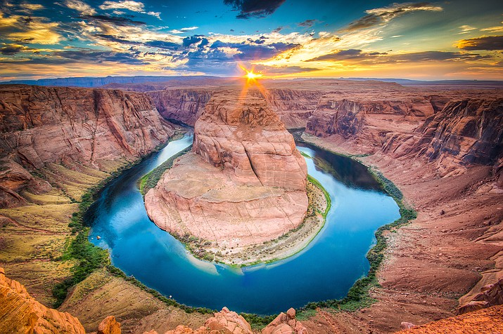

Home
Rivers
Site Plan
Contact Us
Rivers
You'll see in this page, information about rivers that our company runs
Main Fork of the Salmon River, Idaho
Desolation and Gray Canyon, Utah

Grand Canyon, Arizona